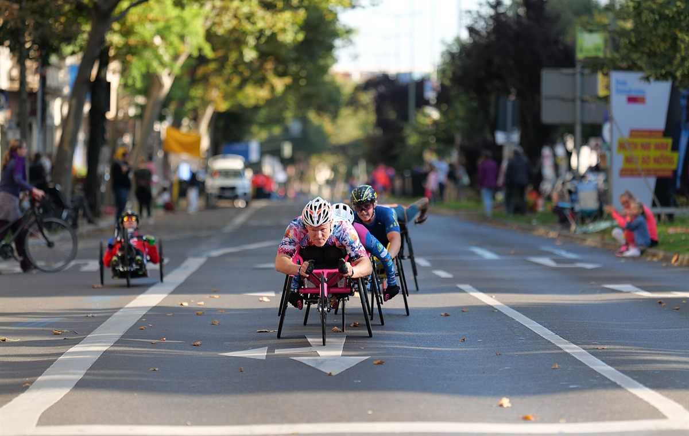

Dime qué necesitas
Cuatro desplegables: moverte, ver y oír, entender y apoyo. Marcas lo que te hace falta. Nunca te preguntamos por un diagnóstico.
Marbellup 2026 · demo con datos de ejemplo
La app de Marbella que te busca la actividad, el sitio comprobado y la compañía. Dices qué necesitas, nunca qué tienes.


La app, funcionando
Todo lo que ves en el móvil responde: marca necesidades, filtra, únete, reserva, avisa de una barrera o crea tu propia actividad. Y lo que hagas llega al panel del Ayuntamiento.
Cuatro desplegables: moverte, ver y oír, entender y apoyo. Marcas lo que te hace falta. Nunca te preguntamos por un diagnóstico.
Cada actividad dice cuánto cubre de lo que pediste y qué le falta. La que lo cubre todo sube arriba. Sin sorpresas al llegar.
Sello del Ayuntamiento o de una asociación, con el día en que se comprobó. Debajo, lo que cuentan quienes ya han ido, también con fecha.
Ves quién viene y eliges: con el grupo, con una persona voluntaria avalada por una asociación, o con alguien tuyo.
Gratis, y puedes cancelar hasta dos horas antes. Tu plan queda guardado con el punto de encuentro y cómo llegar.
Un ascensor averiado, una plaza ocupada. Un toque y el aviso llega al Ayuntamiento. Pruébalo y mira el panel más abajo.
¿No hay lo que buscas? Propón una. Lo que tienes en tu perfil ya viene marcado y otras personas podrán unirse.
Ocupación por horas, barreras avisadas y demanda sin atender. Cada reserva y cada aviso deja un dato útil.
Deporte inclusivo, no separado
Personas con y sin discapacidad, juntas. Pasa el ratón por una foto (o tócala) y ábrela.
Cerca de ti
Del paseo marítimo a la sierra. Toca un punto y mira qué hay, a qué hora y cuántas plazas quedan.
Plano esquemático ilustrativo. No es un mapa real y las ubicaciones son de ejemplo.
La confianza se gana a la vista
Dos niveles de verificación y reseñas con fecha. Si algo no está comprobado, lo dice.
Reseñas de ejemplo para la demo. Las personas y las fechas son ficticias.
Para el Ayuntamiento
Quién empieza a hacer deporte, a qué hora y qué le falta. Datos simulados
Las horas vacías de la mañana se están llenando.
Pulsa «Avisar de una barrera» en el móvil y verás aquí tu aviso.
Cómo pensamos la app
Perfil por necesidades, no por diagnóstico.
Quién lo comprobó y cuándo, siempre a la vista.
Grupo, voluntariado avalado o tu propia compañía.
Compatible con TalkBack, objetivos táctiles de 48 dp, contraste AA, texto ajustable y lectura fácil.
Pruébalo ahora mismo sobre el móvil: